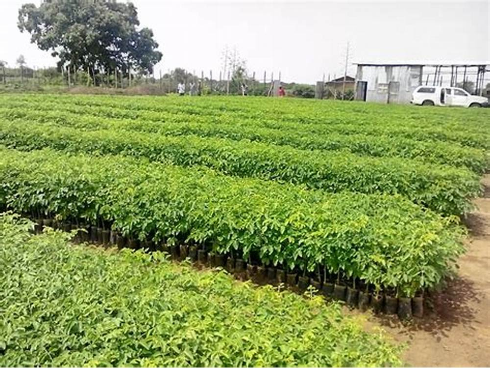
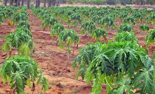
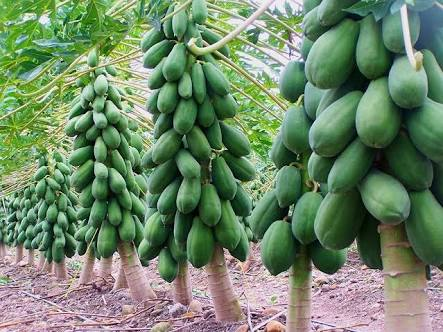
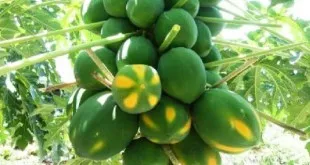
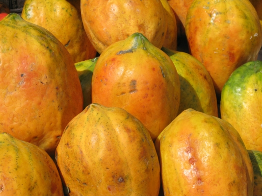

पपीता की खेती और रोग रोकथाम





पपीता की खेती आप हर एक मौसम कर सकते है पपीता की खेती आप प्रत्येक महीने में कर सकते है पपीता का पौधा एक ऐसा पौधा है
जो कम समय में फल देना वाला पौधा है इस लिए इसे सभी किसान लगाना चाहते है पपीता की खेती ( Papita ki kheti ) एक ऐसा खेती है
जो सरलता से की जा सकती है बल्कि कम समय में अधिक लाभ देने वाला भी यह है यह अधिक लोकप्रिय होने के कारण इसे अमृत घट भी कहते है
पपीता के फल में कई प्रकार के एंजाइम पाए जाते है
पपीता के ताजे फल का सेवन करने से लंबिकबजियत की बीमारी भी ठीक हो जाती है ।
पपीता के फल में विटामिन A और C प्रचुर मात्रा में पाया जाता है पपीता के फल में एक पपेन नामक एंजाइम पाया जाता है
जो शरीर की अतरिक्त चर्बी को हटाने में और शरीर को स्व्स्थ रखने में सहायक होता है
और आप पपीता की खेती करके पपीता का व्यापर भी कर सकते है पपीता से लोगो को बहुत से लाभ मिलते है
पपीता की अच्छी खेती के लिए गर्म नमि युक्त जलवायु उपयुक्त मानी जाती है यह अधिकतम 38 डिग्री सेल्सियस से 44 डिग्री सेल्सियस तक तापमान पर उगाया जा सकता है
और न्यूनतम 5 डिग्री सेल्सियस से तापमान कम नहीं होना चाहिए क्योकि लू और पाले से पपीते को बहुत भारी नुकसान होता है
इनसे बचने के लिए खेत में उत्तरी पश्चिमी खेत में हवा रोधक पौधे लगा दे और पाले से बचाने के लिए रात में खेत में धुएं सुलगा दे और हल्का सिंचाई कर दे ।
पपीते की खेती के लिए ऐसे भूमि की चयन करना चाहिए जो अधिक उपजाऊ हो और जल निकास भी अच्छा हो
क्योकि जल निकास नहीं होगा तो पौधों को अधिक पानी मिलाने से उसमे कालरा रॉट की बीमारी हो जाती है
पपीता की खेती( Papita ki kheti in hindi ) को अधिक गहरी वाली मिटटी में नहीं लगाना चाहिए
क्योकि जब आप पपीता को अधिक गहरी वाली मिट्टी में लगाएंगे तो थोड़ी सी भी हवा चलने या अधिक पानी होने से पौधा गिर जायेगा ।
भूमि की तैयारी
Papita ki kheti in hindi पपीते की खेती के लिए भूमि को अच्छी तरह से जुताई करवा दे और उसे समतल करवा दे
और भूमि को हल्का ढाल उत्तम करवा दीजिये 2 बायीं 2 के अंदर पर लम्बा चौड़ा गहरा गढ़ा खोद लेना चाहिए
इन सभी गढ़ो में 20 किलो गोबर की खाद आवस्य्क्ता नुसार और 500 ग्राम सुपर फास्फेट और 250 ग्राम म्यूरेट आफ पोटाश को मिटटी में
मिलकर पपीता के पौधे लगाने से 10 दिन पहले ही गढ़ो में डाल दे फिर आप 10 दिन के बाद उस गढ़े में पपीते के पौधे लगा सकते है ।
पपीता के पौधे उगाने के लिए बीज
एक हेक्टेयर खेत में पपीता का पौधा लगाना है तो लगभग 500 ग्राम से 1 किलो ग्राम तक बीज की आवस्य्क्ता होगी
और पपीते के पौधे उसके बीज के किस्म पर निर्भर करता है की कितना अच्छा किस्म है
और कितनी सावधानी से तैयार किया गया है एक हेक्टेयर खेत में प्रति गढ़े 2 पौधे लगाने से 5000 पौधों की संख्या लगेगी ।
पपीता का पौधा लगाने का समय
पपीते के बीज को पहले रोपणी में तैयार कर लेते है फिर पहले से ही तैयार किये गए गढ़े में जून से जुलाई में लगाना चाहिए
पौधे ऐसे जगह लगाना चाहिए जहा पर पानी का प्रबंध हो सितंबर से अक्टूबर और फरवरी से मार्च के महीने में भी लगा सकते है
( Papita ki kheti in hindi )पपीता की खेती आप हर एक माह में कर सकते है ।
खाद एवं उर्वरक
पपीते के पौधे के लिए खाद एवं उर्वरक कमसे कम एक पौधे को 250 ग्राम नाइट्रोजन , 250 ग्राम स्फुर एवं 500 ग्राम पोटाश की जरूरत पड़ती है
इसे 6 बराबर भागो में बाटकर प्रति 2 माह के अंतराल पर खाद एवं उर्वरक देते रहना चाहिए खाद तथा उर्वरक को मिटटी में मिलाकर थैली में देकर सिंचाई करनी चाहिए ।
पपीते की पौधे की सिंचाई कब करे
पपीते की फल की सफल उत्पादन के लिए बगीचे में जल प्रबंध का होना बहुत ही जरुरी है क्योकि जब तक पौधा फलन में नहीं अत तब तक उसे हल्की हल्की सिंचाई करनी पड़ती है
जिससे पौधा सूखे न और जीवित रहे अधिक पानी देने से पौधे काफी लम्बे हो जाते है और लम्बे होने कारण उसमे कई प्रकार के रोग लग जाते है जिससे फल गिरने लगता है
फल लगने से लेकर पकने तक पौधों अधिक पानी की जरूरत होती है यदि आप समय पर पानी नहीं देंगे तो फल गिरने व सुकड़ने लगता है
आप गर्मियों के दिन में 7 दिन के अंतराल में और जाड़े में 15 दिनों के अंतराल में पानी देते रहे मिटटी में नमी रखने के लिए पौधे के चारो तरफ सूखे खरपतवारो को बिछा देना चाहिए
जिससे अधिक समय तक पौधे के जड़ के पास नमी बनी रहे ।
पपीता की खेती में लगने वाले रोग
पपीता की फसल को ज्यादातर प्रभावित करने वाले मुख्य रोग है एन्थ्रेक्नोज , पीली फफूंदी , तना सडन और भिगोना जड़ो के चारो तरफ जलभराव का होना इसका मुख्य कारण है ।
इन रोगो को नियंत्रण करने के लिए वेटेबल सल्फर , कार्बेन्डाजिम और मैंकोजेब प्रभावी है ।
पपीता की खेती में लगने वाले किट
एफिड्स , रेड स्पाइडर माइट , स्टेम बोरर , मखिया ग्रे विविल और टिड्डे पपीते के पौधे पर हमला करने वाले मुख्य किट है ।
पपीते की संक्रमित हिस्से को नस्ट करने के लिए 0.3 % डिमेथोएट जैसे रोगनिरोधी स्प्रे का छिड़काव करने से उन्हें नस्ट किया जा सकता है ।
पपीते की फल की तुड़ाई
जब पपीता का फल पूरी तरह विक्सित हो जाए और उसके शीर्ष पर पीले रंग का रंग विक्सित होने लगे तब उस समय पपीते की फल की तुड़ाई का समय होता है
तथा तुड़ाई के समय एक और संकेत होता है की फल पका है की नहीं यदि फल को हाथ के नाख़ून से दबाने पर उसमे से दूध के बजाय पानी निकल रहा है
तो उस समय फल को कटा जा सकता है और इस बात का सभी को ध्यान रहे की पपीते के सभी किस्म पकने पर पीले नहीं होते है , कुछ पीले हो जाते है
और कुछ पक्के होने पर भी हरे ही रह जाते है ।
पपीते का जीवन यानी कब तक उपयोग में लाया जा सकता है यह अधिकतम 4 वर्षो तक रहता है लेकिन किसान इसे 2 से 3 साल के आगे पपीता का विस्तार नहीं करते है
क्योकि उस समय इनकी उत्पादन क्षमता कम हो जाती है यदि अच्छा खेत का प्रबंधन हो और समय समय पर उसकी सावधानीपूर्वक देखभाल की गयी हो तो
पपीता उत्पादन को काफी हद तक बढ़ाया जा सकता है